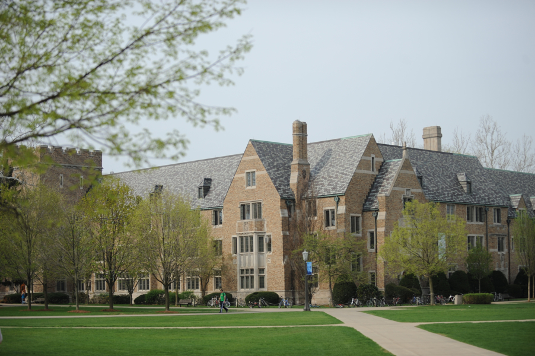

About the Hall
The Building
Alumni Hall was founded in 1931, next to the strikingly similar yet entirely distasteful Dillon Hall. These two dorms were built during Knute Rockne's tenure as head coach, but completed only shortly after his death, and in fact, relief sculptures of Rockne and his dog, Clashmore Mike are carved into Alumni's architecture. At the time, Clashmore Mike was being used as a sideline mascot for the university football team, and the Alumni mascot of the "Dawg" was adopted in memory of Knute Rockne, as Alumni took in the dog as their own after his passing.
During its construction, the gray stone and earth-tone brick used on the large dorms were the first of their kind for ND, and so the two dorms received the nickname "The Platinum Coast", situated across South Quad from the "Gold Coast", of Badin, Howard, and Walsh and Sorin. Alumni Hall was built in the style of French Collegiate Gothic, a heavy, stone-based style that was fond of gargoyles (like the one in our tower) and ornamentation, a style now reused and riffed on for many other buildings at Notre Dame, such as the new dorms, Dunne and Flaherty. Other figures on our walls include St. Thomas Aquinas, Madonna and Child, and an unnamed student referred to as "Joe College", leaving his studies for the real world, something that Alumni hopes to prepare its residents for, in ways far beyond simply academics.
Traditions
While there are no fraternities at Notre Dame, we don the greek letters Delta Omega Gamma (DOG) during Welcome Week, Rivalry Week, Wake Week, and Senior Week. This lets every other dorm know we are there, with bright green lights on South Quad, and to represent the true spirit of fraternity—brotherhood— that we share dearly with fellow residents.
In our 87 years, Alumni has amassed many traditions, and perhaps none as old as the hatred for our brother dorm, Dillon. While the shenanigans hit their peak in the 70s and 80s with so-called 'Dillon Golf' and shouting of "Dillon sucks!", the hatred between our two halls still hits its stride every year in October, during the most storied and intense "Rivalry Week" on campus, including a variety of contests and our joint SYR (set-up your roommate) dance.
However, this is not the main event for Alumni--no, our favorite tradition comes in April, during Wake Week. A week of celebration, whose events and origins remain shrouded in mystery to freshman until such a time that they experience it firsthand, let it simply be said that nearly every Dawg, since its humble origins in 1983, declares that the Wake is the best week of his life.
But there are many other traditions and events, some more recent than others, that have stood the test of time in our sacred hall. Our "five dollar formal" celebrates tomfoolery by asking residents to find an outfit costing a sum total of 5 bucks, and wear it to a bowling alley for a night of good fun. Our rector Fr. George, who has just celebrated his 40th year as our rector, will be turning 80 this January, and his birthday party formal is among our other favorite nights in Alumni.
Some legends deserve to be passed down by word of mouth. Ask your RA about other Alumni Hall traditions.
Dorm Layout
The dorm has four floors. On the first floor there are rooms as well as our chapel, St. Charles Borromeo Chapel. The second and third floor are primarily dorm rooms along with a few study and common rooms. On the fourth floor there is a study lounge where Dawgs go to get some work done. Each of the residential floors(1-3) consist of four hallways: Challey, Main, Talley, and Southwest(SA). Each section consists of two hallways of a specific: Challey & Main and Talley & SA. Each section is led a Resident Assistant.
Sections
Challey: 101-117, 201-217, 301-317
Main: 118-127, 157-167, 218-227, 254-267, 318-327, 354-368
Talley: 129-135, 144-152, 228-235, 244-253, 328-335, 328-353
SA: 136-143, 236-243, 336-343
Fast Facts
Name: Alumni Hall
Mascot: Dawg
Color: Green
Location: South Quad
Founded: 1931
Brother Dorm: Dillon
Sister Dorm: Welsh Family
Chapel: St. Charles Borromeo